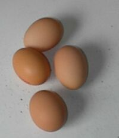

Une jeune villaise qui s'mathyi l'aut'e jour fut siz Le Riche pour acater une douzaine d'oeufs, et ou s'imagini que l'jeune homme qui la servi voulait la jouer.
“I' m'semblye que ches oeufs-là sont hardi p'tits,” ou li dit.
“I' n'sont certainement pas bain gros,” le garçon s'fit, “mais i' sont justement comme le fermi me les a apportés à matin.”
“Ch'est là justement comme les fermiers!” la jeune femme s'êcriyi, “I' dêfouissent lus patates trop vite, et ch'est la même chose avec les oeufs, i' les hallent bain trop bouanne heuthe de dans les nids!”
Le Cahouain
Chroniques de Jersey 29/12/1929
Viyiz étout: